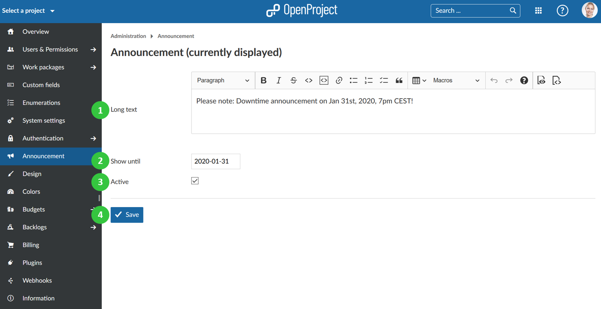
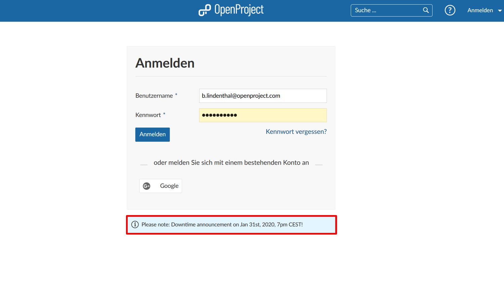
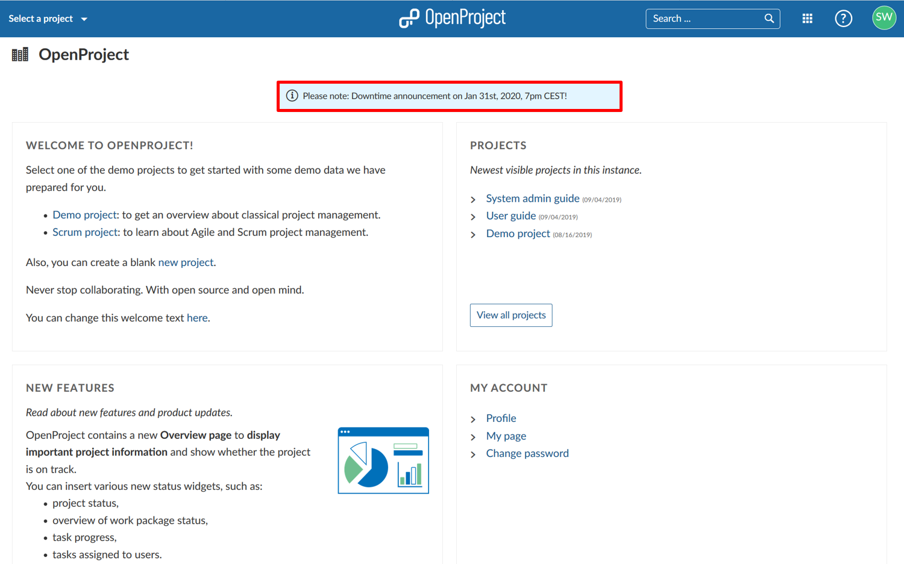

You can configure announcements in OpenProject which will be displayed for a certain period of time for users when the login.

The active announcement will be displayed until the defined date to users on the login screen.

Also, the active announcement will be displayed until the defined date to users on the application start page.
